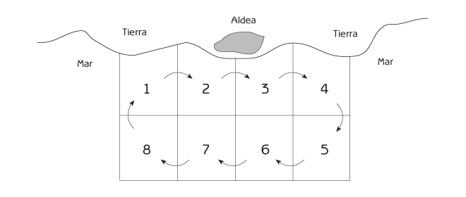
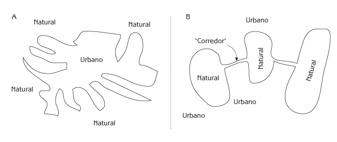
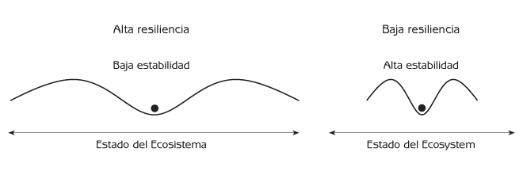

Ecología Humana
Conceptos Básicos para el Desarrollo Sustentable
Capítulo 11: Interacciones Sustentables entre Personas y Ecosistemas
¿Cómo puede la sociedad moderna adoptar un curso de desarrollo sustentable? Lo primero y más importante es no dañar ecosistemas.
- No dañar ecosistemas al grado tal que pierdan su habilidad de proveernos de servicios esenciales.
- Vigilar cuidadosamente el medio ambiente al utilizar nuevas tecnologías para evitar efectos secundarios inesperados.
- No sobreexplotar pesquerías, bosques, cuencas hidrológicas, tierras agrícolas u otras partes de los ecosistemas que nos proveen de recursos renovables esenciales. Incrementar el uso de recursos naturales renovables de manera gradual, monitoreando cualquier daño al recurso.
- Desarrollar instituciones sociales que protejan los recursos de propiedad común de la Tragedia de los Recursos Comunes.
- Observar el principio precautorio al utilizar los recursos naturales, desechar residuos o interactuar con el ecosistema de cualquier manera.
En segundo lugar, debemos hacer las cosas a la manera de la naturaleza, permitiendo al grado que sea posible que sea ésta la que haga la mayor parte del trabajo.
- Tomar ventaja de la habilidad auto-organizadora de la naturaleza, reduciendo la necesidad de insumos humanos para organizar ecosistemas.
- Desarrollar tecnologías que requieran de pocos insumos basados en un diseño que aproveche la labor de la naturaleza.
- Aprovechar los circuitos de retroalimentación positiva y negativa, en vez de luchar contra ellos.
- Utilizar los ciclos naturales que utilizan los residuos de un componente del ecosistema como recurso para otro componente del ecosistema.
- Organizar los ecosistemas agrícolas y urbanos para que imiten estrategias naturales. Por ejemplo, los ecosistemas agrícolas pueden organizarse como policultivos que parezcan ecosistemas naturales en la misma región climática. Pueden reciclarse los bienes de consumo en un “ciclo técnico” que separe los bienes de consumo de los ciclos biológicos del ecosistema.
¿Cómo puede lograrse el desarrollo sustentable en la práctica? Este capítulo comienza con un ejemplo importante – las instituciones sociales que previenen la Tragedia de los Recursos Comunes. Le sigue una evaluación de algunas cuestiones relativas a la coexistencia de ecosistemas urbanos y naturales. El capítulo concluye explorando dos aspectos esenciales e interrelacionados del desarrollo sustentable.
- Resiliencia – la habilidad de sistemas sociales y de ecosistemas, para continuar funcionando a pesar de perturbaciones severas e inesperadas.
- Desarrollo adaptativo – la habilidad de los sistemas sociales de ajustarse a cambios.
La resiliencia y el desarrollo adaptativo son importantes porque el desarrollo ecológicamente sustentable no es simplemente cuestión de un armonioso balance con el medio ambiente. Evitar el daño a los ecosistemas es absolutamente fundamental para el desarrollo sustentable, pero no basta. La sociedad humana cambia constantemente, y lo mismo hace el medio ambiente. El desarrollo sustentable requiere de cierta capacidad para afrontar estos cambios. La resiliencia y el desarrollo adaptativo son la llave para lograr esta capacidad.
Las Instituciones Sociales Humanas y el Uso Sustentable de los Recursos de Propiedad Comun
¿Cómo puede evitarse la Tragedia de los Recursos Comunes? Cuando las instituciones sociales existentes fomentan la Tragedia de los Recursos Comunes haciendo que la sobreexplotación de la propiedad común sea una decisión razonable por parte de los individuos, hacen falta nuevas instituciones que hagan del uso sustentable la opción razonable. Los científicos han comparado cientos de sociedades alrededor del mundo para descubrir cuales instituciones sociales están relacionadas con el uso sustentable de recursos como bosques, pesquerías, aguas de irrigación y zonas de pastoreo. Han descubierto que algunas sociedades son altamente eficaces en evitar la Tragedia de los Recursos Comunes. Los detalles varían en cada instancia, pero los casos exitosos tienen lo siguiente en común.
- Propiedad y límites claramente definidos: La propiedad colectiva de un área claramente delineada permite el control necesario para evitar la sobreexplotación. Esto se conoce como acceso cerrado. La territorialidad es una institución social común utilizada para definir propiedades y sus límites. La expansión de la jurisdicción marina declarada sobre los recursos marinos a 200 millas náuticas de las costas de las naciones es un ejemplo moderno de acceso cerrado para recursos de propiedad común.
-
Compromiso con el uso sustentable del recurso: Los copropietarios del recurso común deberán realmente desear utilizarlo de manera sustentable. Para ello deben acordar:
- Que el uso individual esté dañando el recurso;
- Que el uso cooperativo del recurso disminuirá el riesgo de estos daños;
- Que el futuro tiene importancia (es decir, que las oportunidades para sus hijos y nietos son igual de importantes que sus propias ganancias a corto plazo).
Lo ideal es que los copropietarios tengan un pasado común, se tengan confianza, compartan expectaciones futuras, y valoren su reputación en la comunidad.
La ausencia de conflictos entre copropietarios debidos a diferencias étnicas o estatus económico facilita el proceso.
- Un acuerdo sobre las reglas de utilización del recurso: Todos deben tener suficiente familiaridad con el recurso como para comprender las consecuencias de su uso indebido. Un buen reglamento requiere de un conocimiento profundo no solo del recurso, sino también del comportamiento de sus usuarios. Un buen reglamento es sencillo, de manera que todos lo entiendan, y es justo. A nadie le gusta tener que sacrificarse por la avaricia de los demás. Las utilidades de un buen reglamento son mayores al costo de cooperación; esto incluye los gastos generales de la organización necesarios para que funcione el conjunto. Un buen reglamento no hace perder el tiempo ni desperdicia recursos.
- Mecanismos internos adaptativos: Tarde o temprano es necesario adaptar las reglas de uso del recurso común debido a cambios en el sistema social o en el ecosistema, cambios que frecuentemente originan “desde fuera”. Los mecanismos para adaptar las reglas deben de ser sencillos y asequibles. Los cambios deben darse de manera gradual para evitar cometer grandes errores. Es importante observar cuidadosamente los cambios debidos al nuevo reglamento para que el grupo pueda decidir si deben hacerse aun más cambios. La evolución de las reglas por ensayo y error es un ejemplo de auto-organización del sistema social.
- Ejecución de las reglas: La gente normalmente cumple con las reglas si piensan que todos los demás también lo hacen. La mejor manera de evitar que se rompa el reglamento es con vigilancia interna en que los usuarios se observan unos a otros, complementado con vigilancia externa, como son guardias. Cada quien debe saber que todos los demás se enterarán de cualquier infracción. Si es probable que se detecte la infracción, no hacen falta penas severas. La presión social y la vergüenza pueden tener suficiente fuerza disuasoria. Los castigos deberán ser mínimos para evitar perjudicar el espíritu cooperativo.
- Resolución de conflictos: La gente puede tener percepciones distintas sobre cómo aplicar el reglamento en situaciones particulares. El proceso de resolución de conflictos debe ser sencillo, asequible y justo.
- Interferencia externa mínima: La autonomía local – la capacidad de funcionar independientemente del control de otros – es importante porque la autoridad externa puede imponer decisiones inadecuadas a las condiciones de la localidad. Uno de los motivos más frecuentes para el uso insostenible de recursos comunes es la interferencia de autoridades gubernamentales o de fuerzas económicas foráneas. A los “foráneos” puede no interesarles la sustentabilidad local, y rara vez tienen el conocimiento suficiente de la situación local para comprender cuales reglas funcionarán en la localidad.
Un ejemplo del uso exitoso de recursos comunes: pesquerías costeras en Turquía.
La Tragedia de los Recursos Comunes es un problema frecuente cuando los pescadores no cooperan para prevenir la sobrepesca. Dado que muchas aldeas de pesca tradicional tienen jurisdicción territorial sobre las zonas de pesca aledañas a su aldea, tienen los derechos de propiedad tan esenciales para el uso sustentable del recurso. Una vez establecidos los derechos de propiedad, lo fundamental es establecer un buen reglamento que evite la sobrepesca. Los pescadores de la costa de Turquía nos brindan un ejemplo de reglas que funcionan por estar adaptadas a las condiciones locales. La pesquería Turca tiene dos características importantes:
- Algunas regiones son mejores para la pesca que otras.
- Algunas áreas son mejores para la pesca durante ciertas temporadas del año porque los peces migran a otras aguas a lo largo del año.
Los pescadores han desarrollado las siguientes reglas:
- Utilizan un mapa para dividir la región de pesca en un número de plazas igual al número de pescadores (Véase la Figura 11.1). Al principio de la temporada de pesca se asignan al azar los lotes en que cada pescador debe pescar el primer día de la temporada.
- El primer día, a cada pescador se le permite pescar únicamente en la plaza numerada designada. Al día siguiente solo puede pescar en la plaza numerada que sigue a la plaza que le fue asignada el primer día; y así sucesivamente cada día deberá moverse a la siguiente plaza numerada.

Figura 11.1 Un sistema utilizado para evitar la Tragedia de los Recursos Comunes en una pesquería costera en Turquía.
Las reglas son sencillas y por lo tanto todos pueden entenderlas. También son justas a pesar de la complejidad de sitios buenos, sitios malos y migraciones de peces a lo largo del año. Cada pescador tiene la oportunidad de pescar en sitios buenos, y malos.
Las reglas también son de fácil vigilancia. Si son rotas, es por pescadores que pescan en sitios buenos en días que no les corresponde. Dado que los pescadores casi siempre acuden a los sitios buenos cuando se les permite hacerlo, es fácil detectar a alguien que rompe las reglas. Como consecuencia, los usuarios legítimos de los sitios buenos se aseguran de que otros pescadores no los invadan.
Un ejemplo exitoso del uso de recursos de propiedad común: el manejo forestal tradicional en Japón.
Durante más de 1,000 años, los bosques del Japón fueron la fuente principal de materiales esenciales tales como agua, madera para construcción, paja para techos, comida para animales domesticados, fertilizante orgánico (hojarasca en descomposición) para los sembradíos, y leña y carbón para la cocina y calefacción. Los japoneses utilizaron sus bosques de manera intensa, pero fueron capaces de evitar la Tragedia de los Recursos Comunes al administrar sus bosques como una propiedad común de acceso cerrado. El bosque circundante a cada aldea pertenecía a dicha aldea. La aldea controlaba quien utilizaba el bosque y la manera en que se hacía. Aunque las tierras agrícolas, como los arrozales, eran propiedad privada, el bosque pertenecía a la comunidad entera. Todos estaban de acuerdo en que las tierras comunes del bosque debían ser administradas para servir las necesidades a largo plazo de toda la aldea.
Mientras que cada familia en la aldea tenía derecho a usar el bosque, se establecían reglamentos para el uso del bosque a través de un concejo comunitario en que estaban representadas las familias autorizadas para tomar decisiones ya sea por sus derechos de propiedad u obligaciones tributarias. Las reglas estaban diseñadas para:
- Limitar la cantidad de productos forestales que podía recolectar cada familia.
- Brindar acceso equitativo a cada familia, evitando la sobre explotación por parte de la aldea en conjunto.
- Requerir un mínimo de esfuerzo para su implementación y vigilancia.
- Ajustarse al papel que cada producto forestal tenía en la economía de la aldea.
- Encajar con las particularidades del medio ambiente local.
La familia era la unidad básica de acceso al bosque, y cada hogar era asignado fechas específicas durante las cuales podía extraer madera u otros materiales. Para la mayoría de los materiales, no existía un límite a la cantidad que podía ser removida durante el acceso permitido. En muchas aldeas, un número de hogares eran organizados en kumis. A cada kumi le era asignado una distinta sección del bosque para su uso. Para asegurar la equidad, las zonas asignadas eran rotadas anualmente para que cada kumi pudiera utilizar una parte distinta del bosque.
La manera en que funcionaban estas reglas puede ilustrarse con la típica tarea de remover forraje del bosque. Cada familia podía enviar a tan solo un adulto a cortar el pasto en su sección del bosque en el día indicado. Los miembros de un mismo kumi formaban una hilera para cortar el pasto en su sección del bosque, y solo podían comenzar después de sonadas las campanas del templo. Tras cortarlo, dejaban secar el pasto. Aproximadamente una semana después, dos personas por casa podían regresar al bosque a atar el pasto en haces y ordenarlo en bultos de igual tamaño (uno por cada casa del kumi). Los bultos después eran distribuidos a los hogares miembros del kumi al azar.
Cada aldea desarrollaba su propia manera de imponer las reglas. Dado que solo era permitido remover materiales en fechas específicas, cualquier persona vista en el bosque durante otras fechas obviamente estaría rompiendo las reglas. La mayoría de las aldeas contrataban guardias (un empleo de prestigio para los jóvenes) que patrullaban el bosque a caballo en parejas. En algunas áreas el servicio de guardia era rotado entre todos los jóvenes de la aldea. En las aldeas que no utilizaban guardias, cualquier ciudadano podía reportar intrusos en el bosque.
Cada aldea tenía sus propios castigos por violar las reglas. Los guardias normalmente se encargaban de violaciones ocasionales de manera discreta y sencilla. Era aceptable que los guardias exigieran al infractor un pago pequeño ya sea en efectivo o en sake. Si la infracción era mas seria, los guardias confiscaban la cosecha ilícita, junto con el equipo y caballos utilizados por el infractor. Los infractores debían pagar una multa a la aldea para recuperar su equipo o caballos. El monto de la multa dependía de la gravedad de la infracción, la voluntad del infractor de hacer enmiendas, y el historial de infracciones del culpable.
En ocasiones las reglas eran violadas por necesidad extrema de materiales durante un período en que no se tenía acceso. Una estrategia efectiva para violar las reglas era enviar a la hija más bella al bosque, porque los guardias (siendo hombres) eran más indulgentes con las doncellas. El castigo era menos severo si había un buen motivo para romper las reglas. Por ejemplo, cuentan de un gran número de aldeanos que entraron antes de tiempo al bosque a cortar postes para sus hortalizas. De lo contrario habrían perdido la cosecha. Estos infractores fueron sancionados con ligereza porque el concejo comunitario reconoció que la fecha asignada para cortar postes era demasiado tardía. En este caso los infractores tan solo tuvieron que hacer un pequeño donativo a la escuela.
Las instituciones sociales para el manejo comunitario de los bosques en Japón fueron desarrolladas y refinadas a través de los siglos, culminando en el período Tokugawa (1600-1867). El manejo era exitoso porque era a nivel local. A pesar de que Japón tenía un sistema social feudal y en muchas maneras autoritario, no se imponían desde fuera las reglas para el manejo de los bosques comunitarios. También es de importancia que el acceso al bosque era otorgado a familias, y no a individuos. La cantidad de madera, y de demás materiales, designada a cada familia no incrementaba con el crecimiento de la familia, y las familias numerosas no podían separarse en dos sin dispensa especial de la aldea. Por lo tanto había un incentivo fuerte para no tener demasiados hijos, y durante el período Tokugawa casi no aumentó la población.
El sistema tradicional de manejo forestal comenzó a decaer durante los años de la Restauración Meiji (1868), y deterioró significativamente con la reforma agraria y otros cambios sociales, políticos y económicos que siguieron a la Segunda Guerra Mundial. Los bosques siguen siendo importantes como fuente de agua para uso doméstico, agrícola e industrial, pero el papel de los bosques ha cambiando al convertirse Japón en una sociedad altamente urbana integrada con la economía global. La importancia de los bosques como fuente de materiales declinó mientras Japón cubrió las mismas necesidades importando combustibles fósiles para la cocina y calefacción, madera de otros países para la construcción y fertilizantes químicos para la agricultura.
Actualmente se talan grandes extensiones de bosque cada año para permitir la expansión urbana, mientras que los bosques que perduran han ganado importancia como áreas recreativas para la población urbana.
La escala del uso sustentable de recursos de propiedad común.
La mayor parte de los ejemplos de uso sustentable de recursos de propiedad común son de escala local. La escala local del uso del recurso tiene muchas ventajas, entre estas las siguientes.
- El recurso es más uniforme, y por lo tanto más fácil de comprender, a pequeña escala.
- Los lugareños conocen mejor el recurso, y por lo tanto comprenden mejor que reglas serán efectivas.
- Los lugareños se conocen lo suficiente para tenerse confianza.
- Los lugareños desean un uso sustentable porque les interesa el futuro de los recursos locales.
Una pregunta importante en las relaciones entre humanos y ecosistemas es si el uso sustentable de recursos de propiedad común es posible a gran escala. Hasta la fecha, la experiencia del uso a gran escala no es alentadora. La Tragedia de los Recursos Comunes es típica con recursos explotados por corporaciones multinacionales. Dado que el uso a gran escala es una realidad cotidiana en la actual economía global, el desarrollo de instituciones sociales internacionales viables para prevenir la Tragedia de los Recursos Comunes, es uno de los mayores retos de nuestro tiempo.
Existen diferencias legítimas entre los intereses locales, regionales, nacionales e internacionales al tomar decisiones sobre el uso de recursos naturales. La posesión de recursos, como bosques, por parte del gobierno ha sido asociada con el manejo sustentable en algunos lugares, pero con manejo no-sustentable en otros. La administración gubernamental tiene un historial de otorgar derechos de acceso a madera, forrajeo u otros recursos a individuos con influencia política a costos menores al del valor real del recurso – y frecuentemente sin atención a su uso sustentable. En el caso de que el uso del recurso a gran escala sea inevitable, debe organizarse de manera jerárquica para evitar que las fuerzas económicas nacionales o globales y autoridades gubernamentales excluyan la participación local.
La Coexistencia de los Ecosistemas Urbanos con la Naturaleza
El capítulo 10 describió el conflicto entre la urbanización y la sustentabilidad de las interacciones entre humanos y ecosistemas. Las ciudades dependen de ecosistemas agrícolas para sus alimentos y demás productos. Dependen de ecosistemas naturales para abastecerse de agua, madera, oportunidades recreativas y otros recursos y servicios. Sin embargo, a pesar de esta dependencia, las ciudades tienden a desplazar o degradar los ecosistemas naturales y agrícolas, perjudicando los sistemas de apoyo ambiental sobre los cuales dependen. Las ciudades crecen sobre tierras agrícolas y áreas naturales; y aún donde no desplazan ecosistemas agrícolas o naturales, la demanda excesiva de productos puede llevar a la sobreexplotación y degradación de esos ecosistemas. El crecimiento de las ciudades también afecta indirectamente a los ecosistemas naturales porque el desplazamiento de los ecosistemas agrícolas y la creciente demanda de productos agrícolas, puede resultar en la expansión de los ecosistemas agrícolas a distancia, desplazando a ecosistemas naturales lejanos. Los ecosistemas urbanos modernos pueden tener un fuerte impacto sobre ecosistemas naturales lejanos debido a que sus zonas de abasto se extienden a diversas partes del mundo.
¿Porque los sistemas sociales urbanos no muestran mas cautela para destruir o dañar los ecosistemas agrícolas y naturales de que dependen? Parte de la respuesta (tratada en el Capitulo 10) es la enajenación de la sociedad urbana con respecto a la naturaleza, particularmente si la gente no tiene contacto con los ecosistemas naturales y agrícolas durante su niñez. Las consecuencias para el diseño del paisaje urbano son extensas y profundas. Los paisajes urbanos que brinden a la niñez experiencias con la naturaleza pueden ser fundamentales para una sociedad ecológicamente sustentable. Hasta hace poco, casi todas las ciudades contenían un mosaico de ecosistemas urbanos, agrícolas y naturales que permitían el contacto directo con la naturaleza a poca distancia de la mayoría de los hogares. Lamentablemente, en la actualidad muchas de las grandes ciudades se han convertido en “junglas de concreto” en la que ya no existe esta oportunidad. El resultado podría ser un circuito de retroalimentación positiva entre una sociedad cada vez mas urbanizada y ciudades con menos oportunidades de convivir con la naturaleza durante la niñez, formando adultos que carecen de lazos emotivos con la naturaleza que a su vez limiten la destrucción del sistema de abasto ambiental de sus ciudades. Retener los ecosistemas naturales como parte íntegra de los paisajes urbanos – o buscar las maneras de restaurar áreas verdes donde se han perdido – debería ser tema prioritario para las comunidades urbanas.
¿Es factible que sobrevivan los ecosistemas naturales en contacto directo con ecosistemas urbanos modernos? Es posible cuando la gente de la región se interesa y compromete para evitar la contaminación, destrucción o disrupción severa de los ecosistemas naturales. La coexistencia de ciudades y chaparral en el sur de California es un ejemplo. Los ecosistemas de chaparral se caracterizan por la densidad de grandes arbustos y pequeños árboles de entre 2 y 3 metros de altura. Contienen una rica variedad de aves y otra pequeña fauna, además de animales mayores como venado, puma, linces, coyotes y zorros. Las áreas residenciales de algunas ciudades en el sur de California tienen bordes retorcidos que colocan a muchas casas en proximidad inmediata con ecosistemas naturales de chaparral (véase la figura 11.2a). Estos bordes a veces son formados por las laderas que rodean a las ciudades. La densa vegetación del chaparral limita la actividad humana a los caminos y senderos, protegiendo al ecosistema natural de impactos antropogénicos excesivos, mientras brinda oportunidades para el ciclismo de montaña, senderismo y otras actividades de impacto relativamente discreto.

Figura 11.2 Mosaicos de ecosistemas urbanos y naturales.
El tamaño del ecosistema natural es crítico para mantener su integridad en una zona urbana porque para ser completamente funcional, el ecosistema natural debe ser suficientemente extenso como para brindar hábitat a toda su comunidad biológica. Los grandes depredadores requieren de territorios de por lo menos varios kilómetros cuadrados donde alimentarse; no sobreviven si el ecosistema es demasiado pequeño. Una manera de garantizar que el ecosistema natural sea suficientemente amplio, es conectando parches del ecosistema natural a través de corredores biológicos (véase la figura 11.2b).
La Sierra de Santa Mónica
Aún si es posible que coexistan los ecosistemas urbanos y naturales, los naturales se perderán si se talan para la expansión urbana. La historia reciente de la sierra de Santa Mónica, un área natural de 900 metros cuadrados al borde poniente de Los Ángeles, demuestra cómo las instituciones sociales pueden controlar la expansión urbana sobre los ecosistemas naturales. Las montañas de Santa Mónica tienen casas dispersas en un mosaico que contiene chaparral en las laderas, y bosques de robles y arroyos al fondo de los cañones. Para los 1950s, utilizando maquinaria originalmente diseñada durante la Segunda Guerra Mundial para construir pistas de aterrizaje en las montañosas islas del Pacífico, era viable económicamente y técnicamente nivelar las montañas de granito para construir desarrollos residenciales. Las montañas cercanas a las ciudades frecuentemente son de propiedad pública protegida por ser la fuente del agua. Pero Los Ángeles importa su agua de ríos a cientos de millas de distancia. A mediados de la década de 1960, más del 98 por ciento de los terrenos en la sierra de Santa Mónica estaba en manos privadas, muchas de ellas con la intención de nivelar las montañas para construir miles de viviendas. El crecimiento acelerado de Los Ángeles durante las décadas de 1950s y 1960s cubría las montañas con fraccionamientos residenciales a un ritmo que amenazaba con cubrir la sierra con casas dentro de unas cuantas décadas.
La expansión de vivienda de alta densidad a la sierra de Santa Mónica fue controlada debido a iniciativas ciudadanas que incentivaron a los gobiernos local, estatal y nacional a tomar medidas decisivas para la protección del paisaje natural. A finales de la década de los 1960s, una coalición altamente organizada, pro-activa y persistente de ciudadanos contiguos a las montañas en el poniente de Los Ángeles, asociaciones de colonos de las mismas montañas, y organizaciones ambientalistas como el Sierra Club cabildearon al gobierno a todos los niveles buscando la protección de la sierra. El apoyo enérgico de simpatizantes dentro del Concejo de la Ciudad de Los Ángeles, de la Legislatura Estatal de California, y en el Congreso de los Estados Unidos, resultó en acciones concretas a los tres niveles de gobierno para finales de los 1970s. Mediante negociaciones y anexiones, el estado adquirió 45 kilómetros cuadrados de terrenos privados, sin desarrollar, adyacentes a las áreas donde los desarrollos residenciales al borde de Los Ángeles se expandían rápidamente hacia las montañas. En 1974 este terreno recientemente adquirido se convirtió en el Parque Estatal Topanga, en el cual se prohibió por completo cualquier construcción residencial, comercial o de carreteras. En 1978 el Servicio de Parques Nacionales del gobierno de los Estados Unidos estableció el Área de Recreo Nacional Sierra de Santa Mónica para promover la protección de la naturaleza en toda la región montañosa. En 1979 el estado de California presentó un Plan Integral para toda la sierra de Santa Mónica al gobierno de los Estados Unidos. La legislatura estatal creó la Comisión para la Conservación de la Sierra de Santa Mónica (Santa Monica Mountains Conservancy) para implementar dicho Plan Integral, y todas las ciudades y gobiernos municipales de la región, sin obligación legal, acordaron con él en principio.
Tanto a la Comisión para la Conservación de la Sierra de Santa Mónica como al Servicio de Parques Nacionales se les encomendó la adquisición de terrenos, la protección de la naturaleza en los terrenos adquiridos, el desarrollo y mantenimiento de infraestructura recreativa como son los senderos, y la representación del Plan Exhaustivo en audiencias de gobiernos locales que trataban el desarrollo de terrenos privados. Ambos niveles de gobierno han perseguido sus metas redundantes con algunas diferencias en fuerza institucional, prioridades y estilos administrativos – las redundancias y diferencias les permiten lograr en conjunto lo que ninguno hubiera logrado por sí solo. Cerca del 40 por ciento de la Sierra de Santa Mónica ahora pertenece al gobierno nacional o estatal, y otro 15 por ciento está etiquetado para adquisición futura. Sin embargo, el área total con vegetación natural sigue disminuyendo gradualmente al ser desarrollados los terrenos privados para vivienda u otros proyectos remunerativos, como son viñedos.
La participación activa para promover el uso compatible de la propiedad privada ha sido una prioridad para las dependencias estatales y nacionales porque el uso en tierras privadas puede tener efectos de largo alcance sobre la salud ecológica de terrenos cercanos bajo protección gubernamental. El proceso de influenciar sobre el uso de terrenos privados ha sido extremadamente complejo, con resultados a veces exitosos y en otras ocasiones decepcionantes. Aún si gran parte de los terrenos privados eventualmente son usados para desarrollos urbanos o agrícolas, el compromiso a largo plazo de los gobiernos estatal y federal, de residentes lugareños, de usuarios recreativos y de ecologistas por proteger estas tierras, nos garantiza que el paisaje de la región retendrá una representación significativa de ecosistemas naturales para generaciones futuras.
Resiliencia y Desarrollo Sustentable
Resiliencia es la capacidad del ecosistema o sistema social para continuar funcionando a pesar de severos disturbios ocasionales (véase la Figura 11.3) Para comprender el concepto, imagine una liga elástica y un lazo de hilo. Si la liga se estira al doble de su tamaño original, regresará a su forma inicial una vez que se deje de ejercer presión sobre ella. La liga es resiliente porque rápidamente regresa a su forma original tras ser alterada por fuerzas externas. El lazo de hilo es muy distinto a la liga, porque se rompe si se le fuerza demasiado, y por lo tanto no es resiliente. Un edificio es resiliente si está diseñado para resistir sismos severos. Los sistemas sociales y ecosistemas son resilientes si logran recuperarse de disturbios severos.

Figura 11.3 Diagramas de dominios de estabilidad comparando alta y baja resiliencia.
Los ecosistemas resilientes son el fundamento de un sistema ambiental de abasto sustentable. Para que exista resiliencia es esencial poder anticipar cómo podrían fallar las cosas y hacer los preparativos para el peor de los casos. Hay muchas maneras de lograr la resiliencia:
- Redundancia: la duplicación y diversificación de funciones proporciona respaldos. Este principio es altamente visible en el diseño de las naves espaciales modernas, que tienen sistemas de respaldo extensos para poder reemplazar a cualquier parte averiada. La redundancia abunda en ecosistemas naturales. La presencia de diversas especies con nichos y papeles redundantes contribuye a la resiliencia de los ecosistemas.
- Poca dependencia de insumos antropogénicos: las interrelaciones sustentables entre la gente y los ecosistemas están relacionados con ecosistemas con pocos insumos antropogénicos. La naturaleza se encarga de casi todo. Los grandes insumos antropogénicos reducen la resiliencia porque tarde o temprano algo interferirá con la capacidad social de aportar dichos insumos. El colapso de las civilizaciones de Medio Oriente al taparse con sedimento los canales de irrigación es un ejemplo (véase el Capitulo 10).
La resiliencia es deseable, pero puede entrar en conflicto con otros objetivos sociales igual de benéficos. La eficiencia, por ejemplo, es fundamental para las empresas comerciales modernas ya que es necesario mantener bajos costos operativos para sobrevivir. La eficiencia económica y la resiliencia frecuentemente son incompatibles porque la redundancia que fortalece la resiliencia implica mayor costo y esfuerzo. La competencia del mercado global ejerce presión económica para reducir la resiliencia.
Incompatibilidad entre estabilidad y resiliencia
La estabilidad implica constancia – que las cosas permanezcan más o menos igual. La estabilidad es deseable si evita fluctuaciones indeseables. Por ejemplo, nuestros ingresos son estables si recibimos un sueldo cada mes. Son inestables si no recibimos ese pago de manera regular. La Figura 11.3 demuestra cómo la mayor estabilidad se relaciona con menor resiliencia. Los ecosistemas y sistemas sociales que rara vez sufren cambios fácilmente entran en otro dominio de estabilidad al aplicarse fuerzas externas que les obligan a incorporar cambios mayores a su capacidad para absorberlos.
La tecnología moderna y los grandes insumos de combustibles fósiles han brindado a la sociedad contemporánea la capacidad de crear un alto grado de estabilidad en la mayoría de nuestras vidas, aislándonos de las fluctuaciones del medio ambiente. La calefacción y el aire acondicionado nos permiten vivir y trabajar a aproximadamente la misma temperatura ambiental todo el año. El sistema moderno de producción y distribución de alimentos abastece continuamente a los supermercados con una abundancia de alimentos. La debilidad del sistema consiste en su dependencia sobre grandes insumos energéticos para mantener la temperatura ideal o para producir y transportar alimentos. Estos grandes insumos aumentan la estabilidad, pero reducen la resiliencia.
Un conflicto común entre la estabilidad y la resiliencia es el de la pérdida de resiliencia cuando un sistema es tan estable que deja de ejercer su capacidad para resistir estrés. Podemos ilustrar esto con el desastre que siguió a una escasez de aceite combustible en el Noreste de los Estados Unidos hace algunos años. Los norteamericanos generalmente gozan de una abundancia de energía para calentar sus hogares. La mayoría no estaba preparada cuando hubo una crisis en el abasto del aceite durante un invierno particularmente severo. El resultado fue un asombroso número de muertes por hipotermia al faltar combustible para la calefacción. Los ancianos que rara vez salían de su casa durante el invierno carecían del vestuario indicado para las bajas temperaturas. Otros carecían del sistema de apoyo social necesario para sobreponerse a este tipo de emergencia.
Las planicies aluviales son otro ejemplo de la pérdida de resiliencia por falta de práctica. Un alto porcentaje de la población humana a nivel mundial vive en planicies aluviales porque la tierra fértil y agua abundante implican una alta capacidad para la producción de alimentos. El agua de los ríos se extiende sobre las planicies durante un breve periodo cada año, depositando una capa de lodo que mantiene la profundidad de la tierra y la fertilidad ideales para una agricultura altamente productiva. Sin embargo, las planicies aluviales tienen un inconveniente importante – las inundaciones también pueden dañar los cultivos, casas y demás propiedad. Casi siempre las inundaciones son ligeras y no causan daños, pero en ocasiones pueden ser severas.
Dado que han coevolucionado con el ecosistema, las sociedades de las planicies aluviales típicamente diseñan sus ecosistemas agrícolas y urbanos para minimizar el daño causado por inundaciones. Cultivan las regiones que no se inundan tanto. Si cultivan arroz, utilizan una variedad especial de tallo largo que coloca a los granos sobre el nivel del agua para evitar que se dañe la cosecha. Construyen casas elevadas sobre pilotes, de manera que el agua fluya bajo ellas; almacenan sus alimentos en lugares seguros para evitar escasez en caso que la inundación dañe sus cultivos; y cuentan con instituciones sociales que ayudan a las victimas de inundaciones inusualmente severas. A pesar de estas adaptaciones, las inundaciones aún pueden causar daños, pero estos raramente son severos.
Es normal que la gente quiera evitar cualquier daño. En años recientes, la construcción de presas hidroeléctricas ha ayudado a prevenir inundaciones. Otras medidas, como los diques, evitan que las aguas de ríos se desborden y cubran la planicie aluvial. Estas medidas han reducido el daño de inundaciones a corto plazo, pero también han hecho que la relación entre los pobladores humanos y el ecosistema sea menos resiliente. Sin inundaciones, los ecosistemas de las planicies deterioran gradualmente debido a que se deja de depositar una capa de tierra nueva cada año y la tierra pierde fertilidad. Los agricultores compensan la reducción la fertilidad aplicando grandes cantidades de fertilizantes químicos, lo cual reduce aún más la resiliencia del ecosistema agrícola que ahora depende de estos insumos de fertilizantes. La producción agrícola decaería drásticamente si en un futuro subiera el precio de los fertilizantes, lo cual es muy posible dado que provienen de recursos no-renovables.
El control de las inundaciones puede reducir la resiliencia de la relación entre el sistema social y el ecosistema de otra manera – mediante la pérdida de las instituciones sociales y las tecnologías que protegen a la gente y a su propiedad de los daños causados por inundaciones. Una sociedad que controla las inundaciones “olvida” cómo diseñar sus ecosistemas agrícolas y urbanos para resistir inundaciones. Se cultiva en regiones fácilmente inundadas, las casas se construyen a nivel del piso, y gradualmente se pierden, por falta de uso, las demás instituciones sociales que reducen el impacto de las inundaciones severas. Sin embargo, tarde o temprano – quizá en 20 o 50 años – llega un temporal que causa que los ríos se desborden sobre los diques y presas. A pesar de las medidas de control, los daños son masivos porque ni el sistema social, ni los ecosistemas agrícolas y urbanos están ya estructurados para minimizar estos daños. La relación de la gente con su ecosistema de planicie aluvial ha perdido resiliencia – la capacidad de enfrentar daños severos – porque la estabilidad que otorgan las medidas de control no permitió que el sistema social sintiera los efectos menores de las inundaciones anuales.
El conflicto entre la estabilidad y resiliencia es importante tanto para ecosistemas y sistemas sociales en otras formas. El ejemplo de prevención de incendios forestales del Capitulo 6 ilustra el conflicto entre estabilidad y resiliencia. Los administradores incrementaron la estabilidad apagando todos los incendios, pero redujeron la resiliencia porque la protección contra pequeños incendios incrementó la vulnerabilidad a los grandes incendios de destrucción masiva.
El uso de pesticidas químicos para controlar plagas agrícolas ha incrementado la estabilidad a costo de la resiliencia. Los agricultores tradicionales y orgánicos no utilizan pesticidas para controlar a los insectos que comen sus cultivos; en cambio dependen del control natural de depredadores que se alimentan de los insectos dañinos. El control natural es imperfecto, porque los depredadores no eliminan por completo a los insectos dañinos, sino que presa y depredador coexisten en el mismo ecosistema. En la agricultura tradicional u orgánica, normalmente el daño causado a la cosecha por insectos es de entre 15 y 20 por ciento, porque los depredadores evitan que la población de insectos nocivos aumente lo suficiente para causar daños severos. Sin embargo, ocasionalmente se sufren mayores daños.
El agricultor moderno busca menos daños debidos a insectos y mayor estabilidad, y para ello utiliza insecticidas químicos para matar a todos los insectos posibles. Lamentablemente los insecticidas matan tanto a insectos depredadores como insectos plaga, por lo que se pierde el control natural de plagas. Esto causa que el agricultor sea altamente dependiente de insecticidas. Sin control natural, las poblaciones de insectos dañinos pueden incrementar a niveles devastadores si se dejan de usar insecticidas. La situación empeora aún más cuando las plagas evolucionan resistencia fisiológica a los insecticidas. Los agricultores entonces son forzados a usar cantidades cada vez mayores de pesticidas en un circuito de retroalimentación positiva – la trampa de los pesticidas – entre más plagas y más insecticidas. Mientras que los insecticidas aumentan la estabilidad de la producción agrícola en la ausencia de resistencia a los pesticidas, la resiliencia es reducida porque el daño sufrido al desarrollarse la resistencia en los ecosistemas agrícolas que carecen de control natural, puede ser devastador. Con algunos cultivos, como el algodón, la espiral que aumenta el uso de insecticidas puede crecer hasta que el costo de los insecticidas sea tan alto que la cosecha deja de ser rentable para el agricultor.
La medicina moderna tiene un problema similar con el uso de farmacéuticos para controlar enfermedades como el paludismo y la tuberculosis. Mientras que las drogas son de utilidad obvia, su uso a gran escala puede resultar en variedades de patógenos resistentes al medicamento de la misma manera que el uso de insecticidas resulta en resistencia por parte de los insectos. La estabilidad (bajos niveles de enfermedad) lograda por la medicina moderna va de la mano de una pérdida de resiliencia debido a la dependencia en los farmacéuticos. El riesgo de epidemias con variedades resistentes a drogas puede ser particularmente serio si:
- La población humana ha perdido su inmunidad a la enfermedad;
- Se han abandonado, por falta de necesidad, las instituciones sociales que evitaban la enfermedad de otras maneras.
El conflicto más serio entre la estabilidad y la resiliencia tiene que ver con la seguridad alimenticia. Aunque los países ricos tienen un abasto estable y abundante de alimentos, el almacenamiento de alimentos ha disminuido de manera drástica en la última década. El abasto abundante de las sociedades más acaudaladas crea una ilusión de seguridad poco realista. Al mismo tiempo la ciencia y el desarrollo económico aumentan la producción alimenticia, la degradación ambiental y el deterioro de reservas de agua dulce están reduciendo el potencial. Existe la posibilidad de crisis agrícolas repentinas e inesperadas debido al cambio climático. Naciones como el Japón, que importa el 60% de sus alimentos, son particularmente vulnerables.
La importancia de la estabilidad y resiliencia para el desarrollo sustentable puede expresarse en términos de ciclos de sistemas complejos. La armonía con la naturaleza al hacer las cosas “naturalmente”, evitando dañar los sistemas ambientales de la Tierra es fundamental para el desarrollo sustentable; pero el desarrollo sustentable no es tan solo un equilibrio estático con el medio ambiente. El desarrollo sustentable implica más que hacer que el mundo funcione sin dificultades. Las fluctuaciones y desastres naturales son hechos inevitables de la vida. Por ello el diseño resiliente es parte esencial del desarrollo sustentable. La clave de la resiliencia es la capacidad de reorganizarse cuando las cosas fallan, de manera que la disolución sea lo más breve e inocua posible.
¿Qué hacer con el conflicto entre estabilidad y resiliencia cuando ambas son deseables? Lo mejor, es tener un balance. El sistema social debe estructurar su relación con el ecosistema de manera tal que ni la estabilidad, ni la resiliencia, sea enfatizada una a costas de la otra. Esto implica usar estrategias resilientes para lograr un nivel aceptable de estabilidad.
Desarrollo Adaptativo
El desarrollo adaptativo es la habilidad institucional de enfrentar cambios. Puede contribuir significativamente al desarrollo ecológicamente sustentable al cambiar partes del sistema social para que éste funcione en conjunto con el ecosistema de una manera más sana. El desarrollo adaptativo trata los temas de supervivencia y calidad de vida. El desarrollo adaptativo hace más resiliente la interrelación entre humanos y ecosistemas. Más que simplemente reaccionar a problemas, implica anticiparlos o detectarlos lo más temprano posible, tomando las medidas necesarias para hacerles frente antes que se agraven. El desarrollo adaptativo es un camino hacia el desarrollo sustentable que simultáneamente fortalece la capacidad de enfrentar problemas serios que inevitablemente surgirán si no se logra un desarrollo sustentable.
Los dos elementos básicos del desarrollo adaptativo son: 1) una evaluación regular de lo que sucede en el ecosistema; y 2) tomar medidas correctivas. La clave de la evaluación ecológica es la capacidad para percibir lo que realmente ocurre dentro del ecosistema. La clave de las medidas correctivas es una comunidad plenamente funcional. El desarrollo adaptativo requiere de organización, compromiso, esfuerzo y valor a todos los niveles de la sociedad para identificar los cambios necesarios e implementarlos. La sociedad evalúa sus valores, percepciones, instituciones sociales y tecnologías y las modifica según sea necesario.
¿Qué valores son importantes para el desarrollo ecológicamente adaptativo? Un ejemplo es la importancia que damos al consumo material en cuanto a nuestra calidad de vida. Todos necesitamos alimento, vestimenta y cobijo, ¿pero qué tanto más necesitamos? La escala de nuestro consumo material tiene un impacto crítico sobre el desarrollo sustentable debido a las exigencias del consumo sobre los ecosistemas. Cuando pensamos profundamente sobre lo más importante para nosotros, normalmente identificamos necesidades sociales y emotivas que tienen que ver con la familia, los amigos y la ausencia de estrés. La sociedad moderna ha amplificado el consumo material con una creencia en que un mayor número de posesiones nos ayudará a cubrir esas necesidades básicas, una creencia reforzada por publicidad que enfatiza cómo diversos productos contribuyen a nuestra plenitud sexual, amistades, recreo u otras necesidades emocionales. El resultado es un espiral de consumo ascendente que pretende satisfacer nuestras necesidades más básicas, pero que pocas veces lo consigue.
Los valores modernos en torno a las posesiones materiales están relacionados a nuestra percepción de que el crecimiento económico es fundamental para una buena vida. Líderes políticos nos dicen que el crecimiento económico es su máxima prioridad, mientras que los “expertos” en los medios de comunicación refuerzan constantemente la noción de que un alto nivel de consumo (confianza del consumidor) es esencial para el pleno empleo y una economía sana. La relación del crecimiento económico con el desarrollo sustentable es uno de los temas de mayor trascendencia en nuestros tiempos porque la continua expansión del consumo material es ecológicamente imposible. ¿Qué tipo de crecimiento económico es sustentable? ¿Cómo podemos mantener una economía saludable y satisfacer nuestras necesidades humanas sin exigir demasiado de los ecosistemas? El desarrollo adaptativo mantiene un diálogo público en temas claves como éstos y pide a los líderes políticos que rindan cuentas al respecto.
El desarrollo adaptativo para una sociedad sustentable implica velar por el prójimo – cuidar la comunidad, custodiar a generaciones futuras, y atender los habitantes no-humanos del planeta. Requiere verdadera democracia y justicia social ya que las decisiones y acciones que valoran el futuro requieren de plena participación comunitaria. Cuando un pequeño número de individuos ricos o políticamente influyentes controlan el uso de los recursos naturales, frecuentemente lo hacen buscando el provecho propio a corto plazo. Las sociedades se ven limitadas en su capacidad de responder de manera adaptativa siempre que unos cuantos privilegiados tienen la autoridad para obstruir el cambio cuando dicho cambio amenaza sus privilegios.
Las comunidades locales fuertes y dinámicas son el núcleo del desarrollo adaptativo. La democracia tiene mayor participación, y funciona mejor, a nivel local. Toda interacción con el medio ambiente es, en última instancia, local. Considere la explotación de los bosques. Aunque la deforestación la mueven procesos sociales de gran escala como la expansión urbana y agrícola, los mercados internacionales de madera, y la organización del comercio por corporaciones multinacionales, los árboles son talados, ya sea con hachas o excavadoras, por individuos. Cuando los lugareños controlan sus propios recursos ningún árbol puede ser talado a menos que los habitantes locales lo permitan. Lo mismo sucede con ciudades que son transformadas en “junglas de concreto”, Los ciudadanos pueden permanecer pasivos, consintiendo a que los inversionistas transformen el paisaje urbano siempre de manera más redituable. O bien pueden tomar el control de sus ciudades y permitir únicamente el desarrollo que cuadre con su visión de una ciudad más humana y llevadera – una visión que normalmente incluye paisajes diversos y amenos, con áreas naturales, parques y demás espacios para actividades comunitarias.
Las crisis concretas en temas de peso local pueden movilizar a comunidades a tomar acciones que eventualmente les permitan tomar el control y forjar su propio destino en un frente más amplio. Los detalles pueden variar, pero los siguientes puntos ilustran algunas acciones de largo alcance:
- Revertir tendencias indeseables: Las comunidades evalúan su actual condición social o ecológica, así como los cambios de décadas recientes. Fortalecen apoyos a ancianos, la seguridad, oportunidades de recreo constructivo para los niños, o lo que sea más importante en cada caso particular. Evalúan el balance de ecosistemas naturales, agrícolas y urbanos en su ciudad y en regiones colindantes. Si el mosaico paisajístico no está en equilibrio, toman iniciativas para corregir el rumbo.
- Anticipar desastres: las comunidades se preparan para terremotos, inundaciones, sequías, seguridad alimenticia o lo apropiado a su situación. Parte de la preparación es en cuanto a la respuesta de emergencia, pero también se toman medidas preventivas para minimizar la severidad del desastre, o incluso el riesgo mismo de que éste ocurra. Por ejemplo, los agricultores pueden desarrollar métodos de cultivo resistentes a la sequía en regiones donde las sequías puedan incrementar con el cambio climático. Las comunidades pueden reforzar su autosuficiencia alimenticia formando cooperativas que compren la producción agrícola local y creando mercados para los agricultores locales.
No es indispensable que la organización comunitaria tenga un enfoque ambientalista para que contribuya al desarrollo ecológicamente sustentable. La organización comunitaria para cualquier meta creará la capacidad para identificar y responder a inquietudes ambientales. El primer paso es formar una visión sobre el tipo de vida que la comunidad desea tener, ahora y a futuro – una visión que integre el ambiente social y ecológico. Este tipo de visión comunitaria es sensible al paisaje. Y es sensible a posibles dificultades futuras. ¿Existen problemas de seguridad alimenticia o en cuanto al abasto de agua? Esta visión da respuesta a temas de dependencia o autonomía con respecto al resto del mundo. ¿De qué manera más o menos autosuficiencia sería benéfica para la comunidad? ¿Qué necesidades especiales existen que únicamente la comunidad local puede satisfacer?
El actuar con una visión comunitaria requiere de experimentación. Son esenciales las capacidades de percibir claramente y de articular alternativas, así como la creatividad e imaginación para crear nuevas posibilidades. El desarrollo adaptativo significa experimentar con las posibilidades de manera que permita expandirlas si son útiles o descartarlas en caso contrario. En nuestra actualidad de comunicaciones globales, el desarrollo adaptativo significa crear redes de apoyo para compartir experiencias. Implica estimular y apoyar a comunidades vecinas, y lejanas, a que también se hagan más sustentables.
¿Cómo puede darse todo esto? Gran parte de la respuesta tiene que ver con la educación ambiental y comunitaria. La educación moderna nos obliga a dedicar miles de horas a adquirir habilidades para nuestro éxito profesional, pero nuestras habilidades ecológicas y comunitarias son limitadas. La educación ambiental y comunitaria es aprender a forjar visiones comunitarias y a pensar claramente en políticas alternativas. Es la capacidad de pensar estratégicamente en ecosistemas locales respecto a su totalidad y sus partes – y las conexiones entre sistemas sociales y ecosistemas.
¿Es un sueño utópico el desarrollo comunitario? De hecho el desarrollo adaptativo no es cosa nueva. El desarrollo adaptativo consta en gran parte del sentido común que ha guiado a comunidades sustentables funcionales durante miles de años. El desarrollo adaptativo no solo es sobre el medio ambiente, sino que afecta a cada aspecto de la manera en que una sociedad es viable.
Por supuesto, la acción comunitaria cuesta tiempo, atención y esfuerzo en desarrollar relaciones interpersonales. Muchos piensan que les falta tiempo, o prefieren evitar el esfuerzo, pero una vez que disfruten las recompensas de lograr cosas útiles con sus vecinos, les valdrá la pena. Las hortalizas comunitarias son una manera de promover solidaridad comunitaria mientras se incorpora una perspectiva ecológica. La mayoría disfruta de la jardinería en convivencia con su familia y sus vecinos. Valoran la comida fresca que les da la hortaliza, y la jardinería les pone en contacto con el ecosistema de diversas maneras. Las hortalizas orgánicas tienen un potencial particular para fomentar una conciencia ecológica.
¿Realmente puede darse el desarrollo adaptativo para una sociedad ecológicamente sustentable? Hay razones para ser optimistas. Las corporaciones se están adaptando a la conciencia ecológica de sus clientes desarrollando productos ecológicamente amigables. El sector privado responde a problemáticas ambientales con nuevas tecnologías. Quizá aún más importante es el hecho de que un número cada vez mayor de corporaciones incluyen el desarrollo sustentable entre sus metas institucionales. Ya se han dado cuenta de que su éxito a futuro depende de la salud ambiental del planeta.
Un ejemplo de la capacidad de adaptación del sector privado en cuanto a tecnología es su cooperación con gobiernos para afrontar el problema de la degradación de la capa de ozono. La historia del ozono comenzó con el descubrimiento de que los clorofluorocarbonos (CFC) utilizados primordialmente para refrigeración, estaban destruyendo la capa de ozono que protege al planeta de radiación ultravioleta. Dentro de pocos años se lograron acuerdos internacionales para sustituir a los CFC con químicos ambientalmente inocuos y la industria cumplió con la implementación de los acuerdos. Parece que están emergiendo historias similares en la industria energética en torno a las reservas limitadas de petróleo y gas natural del planeta. El uso de hidrógeno para almacenar y transportar energía se explora cada vez más, y las tecnologías alternativas como paneles solares y molinos eólicos experimentan un crecimiento acelerado. Todo esto es muy positivo, pero la capa de ozono no ha sanado, ni se ha resuelto la dependencia de hidrocarburos. Alarmantemente, algunas industrias continúan obstruyendo tecnologías y productos que compiten con sus mercados actuales.
Hay menos razones para ser optimistas en cuanto a adaptaciones que entran en conflicto con los fundamentos básicos de la sociedad moderna. El cambio climático es un ejemplo. Las reducciones en emisiones de gases invernadero, en particular de dióxido de carbono, atentan contra el núcleo de la dependencia de la sociedad moderna en cantidades masivas de energía de combustibles fósiles. En 1997 el Protocolo de Kyoto fijó una meta internacional para reducir las emisiones de carbono de las naciones industrializadas en un 5 por ciento dentro de los diez años subsiguientes. Algunas naciones promovieron esta meta con entusiasmo, otras la aceptaron con desgana. Países en desarrollo, entre ellos algunos en proceso de industrialización y responsables de emisiones masivas de dióxido de carbono, se rehusaron a comprometerse a cualquier restricción sobre sus emisiones. Aunque el Protocolo de Kyoto es significativo como el primer paso de cooperación internacional en respuesta al cambio climático, las acciones dictadas por el Protocolo de Kyoto son demasiado modestas como para tener importancia práctica. Estudios de simulaciones computacionales han indicado que aún si toda nación cumple rigurosamente con el Protocolo de Kyoto, los gases invernadero continuarán acumulándose en la atmósfera, y que el incremento en la temperatura promedio del planeta durante los próximos 50 años se verá reducido en menos de 0.1 grados centígrados, comparado con el incremento esperado en la ausencia de implementación del tratado – una diferencia insignificante. Los estudios computacionales indican que la plena implementación del Protocolo de Kyoto reduciría el número de personas en riesgo de inundaciones costeras debido a una subida del nivel del mar durante los próximos 50 años en tan solo una similar proporción insignificante. El impacto sobre los cambios climáticos regionales sería prácticamente nulo. Lamentablemente ni las naciones industrializadas ni aquellas en vías de desarrollo están dispuestas a considerar seriamente mayores reducciones en las emisiones de dióxido de carbono, que son necesarias para tener un impacto verdadero sobre el cambio climático.
¿Qué pueden hacer los gobiernos a favor del desarrollo adaptativo? Obviamente deberían aceptar realidades tales como el cambio climático y hacer su mejor esfuerzo por resolver las problemáticas ambientales a nivel regional, nacional e internacional. De igual importancia es que los gobiernos eduquen a sus ciudadanos sobre temas ambientales y apoyen la capacidad de comunidades locales, mediante asistencia didáctica y material, para lograr el desarrollo adaptativo. Las comunidades locales deben exigir esta asistencia por parte de gobiernos. Los gobiernos pueden facilitar y apoyar a comunidades en la implementación de distritos ambientales, similares a los distritos escolares de muchos países.
Las organizaciones no-gubernamentales (ONG) han desarrollado un papel crucial en promover un diálogo mundial sobre temas ambientales. La Conferencia de las Naciones Unidas sobre el Medio Ambiente y Desarrollo de 1992 reunió a gobiernos, ONG, el sector privado y otros. Aunque el proceso no ha sido fácil, dichos foros refuerzan la interdependencia de temas globales y locales, y la necesidad de colaborar a todos los niveles.
Las ONG pueden catalizar el desarrollo adaptativo. Mientras que las ONG varían enormemente en su organización y misión, un breve ejemplo ilustrará su potencial. Las organizaciones conservacionistas se han dado cuenta de que sus esfuerzos por proteger ecosistemas naturales como reservas frecuentemente son socavados por actividades humanas en áreas circundantes – entre estas, actividades esenciales a la supervivencia de los habitantes. En respuesta adaptativa, algunas organizaciones conservacionistas están formando empresas para aprender y demostrar cómo realizar actividades económicas sin detrimento al ecosistema natural. Por ejemplo, han formado alianzas con compañías madereras para administrar bosques en maneras que no solo son sustentables para la producción maderera, sino que mantienen ecosistemas de bosque natural como parte ïntegra del mosaico paisajístico. Han creado cooperativas con pescadores de arrecifes para garantizar un abasto sustentable de pescado y al mismo tiempo proteger la singular biodiversidad de los arrecifes. Otras han formado cooperativas con agricultores para lograr la compatibilidad entre la agricultura y los ecosistemas naturales de la misma cuenca. Donde la sedimentación por erosión amenaza a estuarios u otros ecosistemas las alianzas entre conservacionistas y agricultores brindan apoyo técnico y mercadeo para garantizar ingresos satisfactorios con métodos de cultivo que minimizan la erosión.
Ambiente social
Las características de ambientes sociales incluyen:
- Educación (por ejemplo, memorización o aprende a pensar);
- Ver televisión y jugar videojuegos o jugar al aire libre con amigos;
- Barrio seguro o temor al crimen
- Trabajar cerca de su casa versus tener que viajar largas distancias para trabajar.
- El acceso igualitario/desigual de mujeres a oportunidades profesionales.
Ambiente Urbano
Las características del ambiente urbano incluyen:
- Tráfico;
- Calidad de aire;
- Vivienda (por ejemplo, de alta densidad o baja densidad);
- Parques y áreas naturales en la ciudad;
- Lugares para actividades comunitarias.
Ambiente Rural
Las características de ambientes rurales incluyen:
- Oportunidades recreativas;
- Bosques como fuente de agua limpia, madera, biodiversidad, recreo, etc.
- Seguridad y abasto alimentario.
Ambiente Internacional
Las características de ambientes internacionales incluyen:
- Fuentes de alimentos y recursos naturales;
- Oportunidades de recreo y turismo;
- Impactos de la cultura popular global;
- Impactos de la economía global.
Recuadro 11.1 Ejemplos de ambientes y sus características
¿Qué puede hacer el individuo? Pueden aportar una perspectiva de ecología humana y un compromiso con el desarrollo sustentable a su empleo, y pueden organizar los detalles de su vida cotidiana para estar en mayor armonía con el medio ambiente. De igual importancia es el trabajo que pueden hacer por la viabilidad de su propia comunidad – ayudar a formar una visión comunitaria; evaluar el estado ecológico de su región y los cambios en el paisaje local; colaborar con los sistemas de apoyo comunitario; y en general, integrar a largo plazo la salud ambiental y resiliencia a su comunidad. Pueden enseñar lo que es el desarrollo sustentable a sus vecinos y despertar su deseo de participar en el proceso de fijar un rumbo ecológicamente sustentable a futuro. Ya lo dijo la eminente antropóloga Margaret Mead, “Nunca dude de que un pequeño grupo concienzudo de ciudadanos comprometidos puedan cambiar al mundo; de hecho, es lo único que lo cambia.”
Puntos de Reflexión
- ¿De qué manera puede incorporar resiliencia en su vida personal? ¿Cómo lo hace la sociedad en que vive? ¿De qué manera es débil la resiliencia de su comunidad, país o el mundo? ¿Qué puede hacerse para mejorar la resiliencia en esas instancias?
- Piense en ejemplos del conflicto entre estabilidad y resiliencia en su vida personal. Piense en ejemplos en la sociedad en que vive. ¿Están en balance la estabilidad y la resiliencia? ¿Qué puede hacerse para lograr un mejor balance?
- Acordar sobre un reglamento para el uso de recursos comunes es fundamental para el uso sustentable del recurso. Piense en ejemplos concretos de instituciones sociales que evitan la Tragedia de los Recursos Comunes, utilizando información de periódicos, revistas o experiencia personal. Luego piense en las instituciones sociales de su sociedad para usar recursos como el petróleo, minerales, agua y la tierra. ¿Son efectivas para un uso sustentable? ¿Se le ocurren maneras de mejorarlas desde esta perspectiva?
- ¿Para qué tipo de contingencias públicas está organizada su comunidad? ¿Algunas son ambientales? ¿Existen inquietudes ambientales para las que no hay respuesta comunitaria a pesar de que usted piense que debería haberla? ¿Cómo cree que podría educarse a su comunidad para que establezca prioridades indicadas en su interrelación con los ecosistemas?
- ¿Qué papel desempeñan los gobiernos locales, estatales y nacionales en formar la interrelación entre humanos y ecosistemas en su país? ¿Qué papel desempeñan las corporaciones? ¿Qué pueden hacer los ciudadanos para que gobiernos y corporaciones sigan políticas más ecológicamente sustentables?
- La planificación estratégica es una forma de comenzar actividades constructivas en apoyo al desarrollo ecológicamente sustentable de su comunidad. Platique con sus amigos para descubrir sus opiniones con respecto a los siguientes pasos de planificación estratégica:
- Una visión ideal de su comunidad dentro de 20 años. ¿Qué tipo de vida quiere para sus hijos y nietos? ¿Qué tipo de medio ambiente quiere que tengan sus hijos y nietos para que tengan la oportunidad de vivir esa vida? La visión puede incluir lo que quieren resguardar, así como lo que hace falta mejorar. “Ambiente” puede tener un amplio significado, que incluye ambientes sociales y urbanos, así como ecosistemas naturales y agrícolas (Recuadro 11.1)
- Obstáculos para realizar la visión. ¿Qué problemas ambientales podrían evitar el tipo de vida que definió en su visión? Puede incluir problemas actuales y que necesitan ser atendidos (por ejemplo, la calidad de aire en las ciudades), así como cosas que actualmente no son problema pero que podrían llegar a serlo a futuro si continúan ciertas tendencias. (Por ejemplo, la actual destrucción de bosques o tierras agrícolas debido a la expansión urbana aún no tiene consecuencias graves en algunos lugares, pero podría llegar a tenerlas). También puede pensar en temas que no son problema actual, pero que de manera repentina podrían serlo (por ejemplo, la seguridad alimenticia).
- Acciones para vencer los obstáculos. Decida qué puede hacer su comunidad en respuesta a los problemas ambientales identificados previamente. ¿Qué puede hacer el individuo? ¿Cómo empezar? ¿Cuales son los obstáculos institucionales a las actividades exitosas? ¿Cómo pueden superarse las dificultades institucionales? ¿Puede hacerlo por su cuenta o necesita la cooperación de gobiernos locales o nacionales, del sector privado o de organizaciones no gubernamentales?